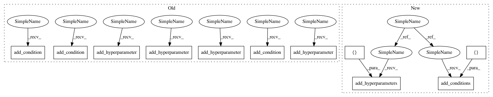

8565a366de87d82dc19c3386b4a83359be1aa275,autosklearn/pipeline/components/classification/sgd.py,SGD,get_hyperparameter_search_space,#Any#,115
Before Change
default="log"))
penalty = cs.add_hyperparameter(CategoricalHyperparameter(
"penalty", ["l1", "l2", "elasticnet"], default="l2"))
alpha = cs.add_hyperparameter(UniformFloatHyperparameter(
"alpha", 10e-7, 1e-1, log=True, default=0.0001))
l1_ratio = cs.add_hyperparameter(UniformFloatHyperparameter(
"l1_ratio", 1e-9, 1, log=True, default=0.15))
fit_intercept = cs.add_hyperparameter(UnParametrizedHyperparameter(
"fit_intercept", "True"))
n_iter = cs.add_hyperparameter(UniformIntegerHyperparameter(
"n_iter", 5, 1000, log=True, default=20))
epsilon = cs.add_hyperparameter(UniformFloatHyperparameter(
"epsilon", 1e-5, 1e-1, default=1e-4, log=True))
learning_rate = cs.add_hyperparameter(CategoricalHyperparameter(
"learning_rate", ["optimal", "invscaling", "constant"],
default="optimal"))
eta0 = cs.add_hyperparameter(UniformFloatHyperparameter(
"eta0", 10**-7, 0.1, default=0.01))
power_t = cs.add_hyperparameter(UniformFloatHyperparameter(
"power_t", 1e-5, 1, default=0.25))
average = cs.add_hyperparameter(CategoricalHyperparameter(
"average", ["False", "True"], default="False"))
// TODO add passive/aggressive here, although not properly documented?
elasticnet = EqualsCondition(l1_ratio, penalty, "elasticnet")
epsilon_condition = EqualsCondition(epsilon, loss, "modified_huber")
// eta0 seems to be always active according to the source code; when
// learning_rate is set to optimial, eta0 is the starting value:
// https://github.com/scikit-learn/scikit-learn/blob/0.15.X/sklearn/linear_model/sgd_fast.pyx
//eta0_and_inv = EqualsCondition(eta0, learning_rate, "invscaling")
//eta0_and_constant = EqualsCondition(eta0, learning_rate, "constant")
//eta0_condition = OrConjunction(eta0_and_inv, eta0_and_constant)
power_t_condition = EqualsCondition(power_t, learning_rate, "invscaling")
cs.add_condition(elasticnet)
cs.add_condition(epsilon_condition)
cs.add_condition(power_t_condition)
return cs
After Change
@staticmethod
def get_hyperparameter_search_space(dataset_properties=None):
cs = ConfigurationSpace()
loss = CategoricalHyperparameter("loss",
["hinge", "log", "modified_huber", "squared_hinge", "perceptron"],
default="log")
penalty = CategoricalHyperparameter(
"penalty", ["l1", "l2", "elasticnet"], default="l2")
alpha = UniformFloatHyperparameter(
"alpha", 10e-7, 1e-1, log=True, default=0.0001)
l1_ratio = UniformFloatHyperparameter(
"l1_ratio", 1e-9, 1, log=True, default=0.15)
fit_intercept = UnParametrizedHyperparameter("fit_intercept", "True")
n_iter = UniformIntegerHyperparameter("n_iter", 5, 1000, log=True, default=20)
epsilon = UniformFloatHyperparameter(
"epsilon", 1e-5, 1e-1, default=1e-4, log=True)
learning_rate = CategoricalHyperparameter(
"learning_rate", ["optimal", "invscaling", "constant"],
default="optimal")
eta0 = UniformFloatHyperparameter(
"eta0", 10**-7, 0.1, default=0.01)
power_t = UniformFloatHyperparameter("power_t", 1e-5, 1, default=0.25)
average = CategoricalHyperparameter(
"average", ["False", "True"], default="False")
cs.add_hyperparameters([loss, penalty, alpha, l1_ratio, fit_intercept,
n_iter, epsilon, learning_rate, eta0, power_t,
average])
// TODO add passive/aggressive here, although not properly documented?
elasticnet = EqualsCondition(l1_ratio, penalty, "elasticnet")
epsilon_condition = EqualsCondition(epsilon, loss, "modified_huber")
// eta0 seems to be always active according to the source code; when
// learning_rate is set to optimial, eta0 is the starting value:
// https://github.com/scikit-learn/scikit-learn/blob/0.15.X/sklearn/linear_model/sgd_fast.pyx
//eta0_and_inv = EqualsCondition(eta0, learning_rate, "invscaling")
//eta0_and_constant = EqualsCondition(eta0, learning_rate, "constant")
//eta0_condition = OrConjunction(eta0_and_inv, eta0_and_constant)
power_t_condition = EqualsCondition(power_t, learning_rate, "invscaling")
cs.add_conditions([elasticnet, epsilon_condition, power_t_condition])
return cs
In pattern: SUPERPATTERN
Frequency: 4
Non-data size: 11
Instances
Project Name: automl/auto-sklearn
Commit Name: 8565a366de87d82dc19c3386b4a83359be1aa275
Time: 2017-02-04
Author: feurerm@informatik.uni-freiburg.de
File Name: autosklearn/pipeline/components/classification/sgd.py
Class Name: SGD
Method Name: get_hyperparameter_search_space
Project Name: automl/auto-sklearn
Commit Name: 8565a366de87d82dc19c3386b4a83359be1aa275
Time: 2017-02-04
Author: feurerm@informatik.uni-freiburg.de
File Name: autosklearn/pipeline/components/feature_preprocessing/kernel_pca.py
Class Name: KernelPCA
Method Name: get_hyperparameter_search_space
Project Name: automl/auto-sklearn
Commit Name: 8565a366de87d82dc19c3386b4a83359be1aa275
Time: 2017-02-04
Author: feurerm@informatik.uni-freiburg.de
File Name: autosklearn/pipeline/components/feature_preprocessing/nystroem_sampler.py
Class Name: Nystroem
Method Name: get_hyperparameter_search_space
Project Name: automl/auto-sklearn
Commit Name: 8565a366de87d82dc19c3386b4a83359be1aa275
Time: 2017-02-04
Author: feurerm@informatik.uni-freiburg.de
File Name: autosklearn/pipeline/components/regression/libsvm_svr.py
Class Name: LibSVM_SVR
Method Name: get_hyperparameter_search_space
Project Name: automl/auto-sklearn
Commit Name: 8565a366de87d82dc19c3386b4a83359be1aa275
Time: 2017-02-04
Author: feurerm@informatik.uni-freiburg.de
File Name: autosklearn/pipeline/components/classification/sgd.py
Class Name: SGD
Method Name: get_hyperparameter_search_space